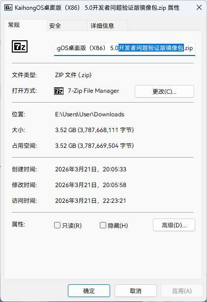
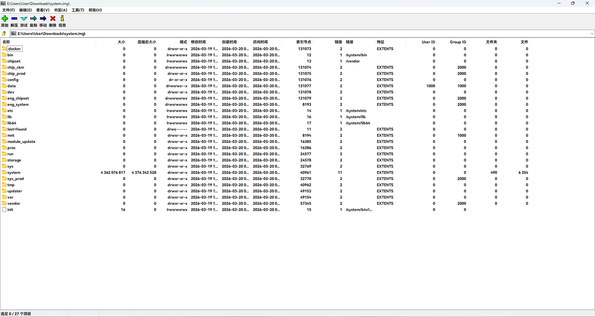
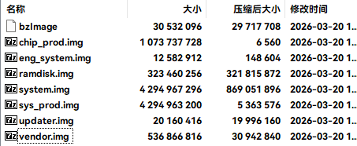
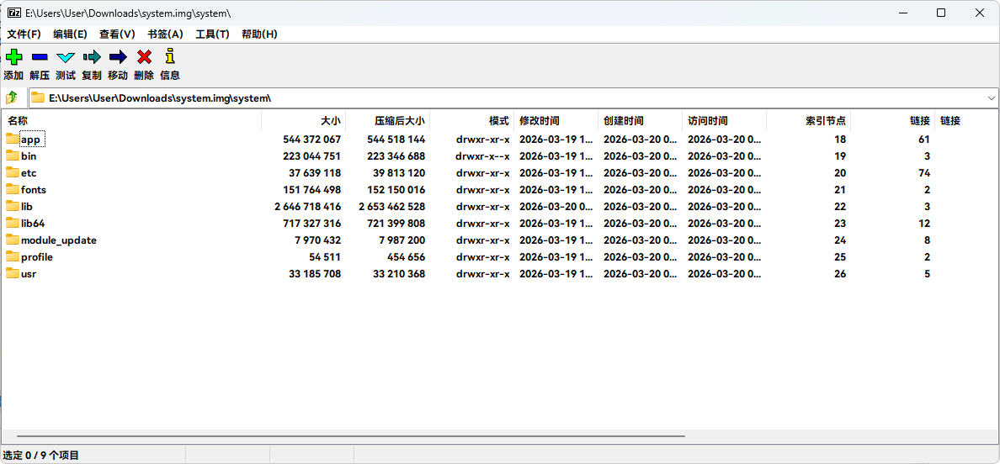

Wilf Lin
@Wilf_Lin
@publicwy_ext 他的内核是对Linux完全兼容的，但确实不是Linux，所以像也能理解




publicwy ext
@publicwy_ext
OpenHarmonyOS真的是完全自研，我看着不太像啊。今天我Q群群友获得到了OpenHarmonyOS X86_64的分区压缩包并对此进行查看，如图二所示，我就觉得很Android。因为：可以看到system分区里面也是标准的system-as-root结构并且system/里也和Android极其相似（图二，三） https://t.co/r7trNjFyzX